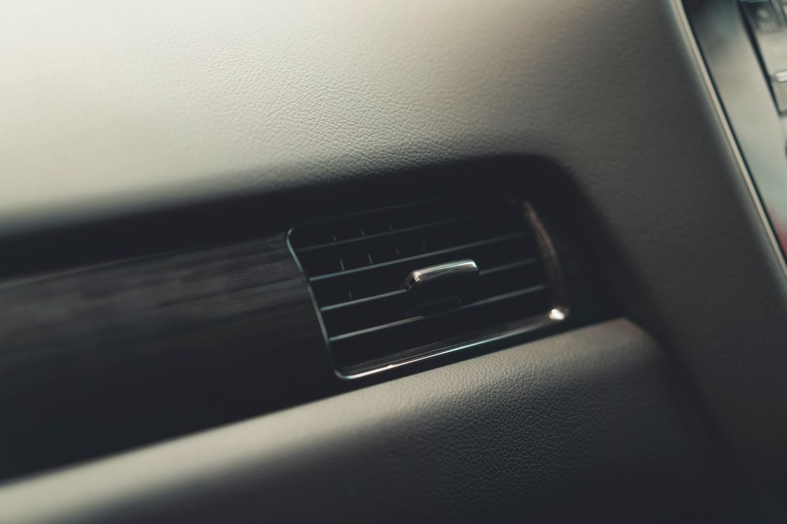

Onsite mower repair in Mandeville
We come to the mower
Tammany Mower Repair is an onsite mower repair service in Mandeville. The business description is simple: onsite mower repair, in the lawn mower repair service category.
Onsite mower repair in Mandeville
Tammany Mower Repair is an onsite mower repair service in Mandeville. The business description is simple: onsite mower repair, in the lawn mower repair service category.
Tammany Mower Repair is at 22240 Marshall Rd Unit C in Mandeville. It is an onsite mower repair service, so the work comes to the customer rather than the other way around.


22240 Marshall Rd Unit C, Mandeville, LA
Monday to Friday, 9:00 AM to 5:00 PM